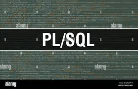

Databasutveckling
Expert på Oracle 10g och 11g, PL/SQL och Oracle Designer.
Expert på Oracle 10g och 11g, PL/SQL och Oracle Designer.
Erfarenhet av att utveckla och testa robusta säkerhetssystem.
Java är ett av mina starkaste områden. Jag har utvecklat flera interaktiva webbapplikationer.
Jag har gedigen kunskap inom HTML och CSS för att skapa responsiva och tillgängliga webbsidor.
TOAD, Jdeveloper och MS Visio för effektiv utveckling och design.

Styrning och uppföljning av projekt med hjälp av metoder som RUP och UML.